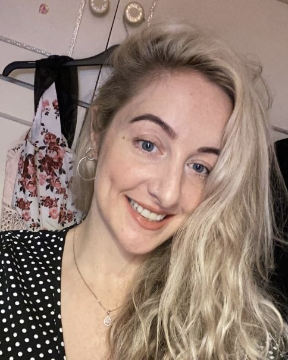

Patricia O Loughlin's Resume

Summary
I am a hard working, self taught web devleoper.
Education
- BSc Sports and Exercise Science, University of Limerick (2010-2014)
- BSc Physiotherapy, Salford University, (2015-2018)
- Disability Analyst (Jan 2019- Aug 2019)
- Self- taught, "The Complete 2023 Wed Development Bootcamp (Nov 2023- March 2024)
Work Experience
- King's College London Hospital rotations
- Connect Health MSK physiotherapist(London)
- Locum Physiotherapist
- Disability Analyst (DWP)
Skills
- Customer Service⭐⭐⭐⭐⭐
- Microsoft Office Suite⭐⭐⭐⭐⭐
- Organistational Skills⭐⭐⭐⭐⭐
- Motivationed and disciplined⭐⭐⭐⭐⭐
Awards and Certifications
- The Complete 2023 Web Development Bootcamp Certificate
Other